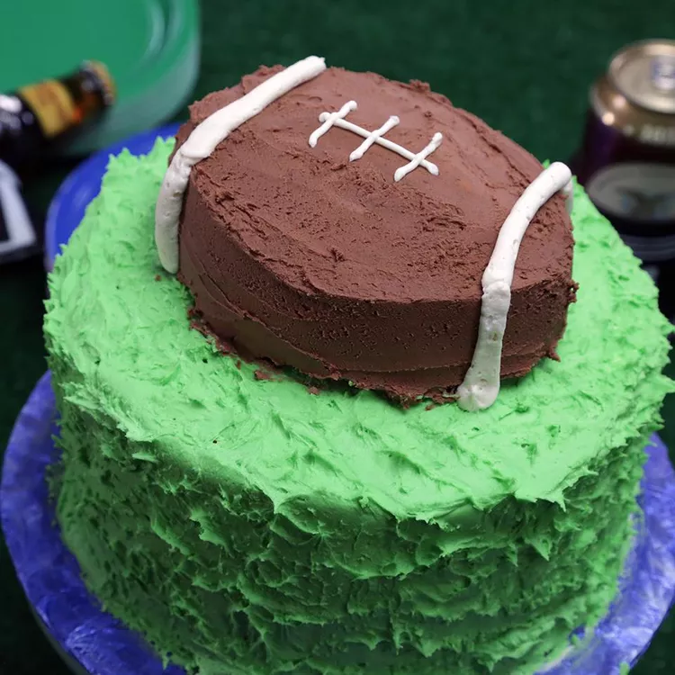

Home
Football cake Recipe

Description
End your Super Bowl® party on a bang with this touchdown in dessert form.
Layers of yellow cake are painted with buttercream 'grass' and topped with a scrumptious football.
Ingredients
- cooking spray
- 2 (15.25 ounce) packages yellow cake mix (such as Betty Crocker™ Super Moist™ Yellow Cake Mix)
- 2 cups milk
- 1 cup unsalted butter, melted
- 6 eggs
- 2 teaspoons vanilla extract
- ½ teaspoon salt
- 2 cups unsalted butter
- 8 cups sifted confectioners' sugar
- ¼ cup milk
- 2 teaspoons vanilla
- green food coloring
- 2 ounces semisweet chocolate, melted and cooled
Steps:
- Preheat the oven to 350 degrees F (175 degrees C). Line the bottom of three 8-inch cake pans and
one 6-inch cake pan with parchment paper and spray the bottom and sides with cooking spray
- Pour both packages of cake mix into the bowl of a stand mixer. Add milk, melted butter, and eggs while mixing on low speed.
Add vanilla extract and salt and increase speed to medium. Beat for 2 minutes. Divide the batter between the prepared pans.
- Bake in the preheated oven until a toothpick inserted into the center comes out clean, 28 to 33 minutes. Note that the smaller cake may be done before the larger ones. Cool for 10 minutes in the pans, then turn out and cool completely on a wire baking rack for at least 30 minutes. Chill for an additional 30 minutes.
- While the cakes are cooling, make the buttercream frosting. Beat butter on medium speed in an electric mixer until creamy. Add confectioners' sugar alternately with milk and beat until it reaches a spreadable consistency. Stir in vanilla extract.
- Scoop 1/2 of the frosting into a bowl and set aside. Scoop two-thirds into another bowl and dye with green food coloring to your desired shade of green. Stir the melted chocolate into the remaining frosting. You should have three bowls of frosting: white, green, and brown.
- Trim the tops of the cooled 8-inch cake layers until flat. Stack the cake layers on a 10-inch cake board, filling the middle with white buttercream. Apply a thin layer of white frosting to the sides for the crumb coat. Chill cake for another 30 minutes or until frosting is set.
- Frost the chilled cake with green buttercream. Tap the surface of the cake with the flat side of a spatula to create a grassy look.
- Lightly score a line down the center of the 6-inch cake. Make a cut 1/2 inch from either side of the center line and remove the middle section. Sandwich the two sides of the cake together using some of the chocolate buttercream, forming a football shape. Finish frosting the outside of the football cake with the chocolate buttercream. Place 'football' on top of the green 8-inch cake.
- Fill a piping bag fitted with a small round pastry tip with the remaining white buttercream. Pipe a 3-inch line in the center of the football cake. Pipe small lines over it to create lacing. Switch the pastry tip to a large round tip, and pipe a thick line on either side of the football cake about 2 inches from either end.